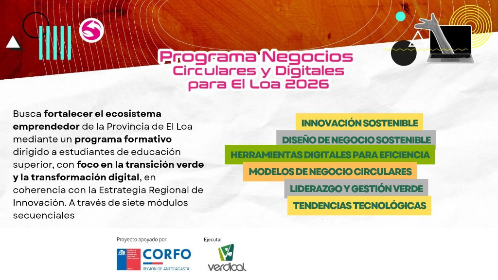

Fortalecimiento del Ecosistema Emprendedor e Innovación en El Loa
Programa formativo dirigido a estudiantes de educación superior con foco en la transición verde y la transformación digital, en coherencia con la Estrategia Regional de Innovación. A través de siete módulos secuenciales, capacitó y articuló a jóvenes talentos de INACAP y AIEP en torno a soluciones territoriales de economía circular.

Curva de Transferencia Cognitiva
Diagnóstico Ex-ante (Línea Base) vs. Ex-post (Salida)
Desempeño Demoday por Criterio
Evaluación media de los 4 proyectos (Escala 1 a 5)
Comparativa Institucional
Rendimiento Ex-post y NPS Score por Casa de Estudios
Los 4 Proyectos Destacados del Demoday (Con Incentivos Asignados)
Estudiantes organizados en 4 equipos que expusieron sus ideas de proyecto ante la comisión de jurados
Ecoesmart
Felipe Vergara, Cristian Salfate, Lorens Barboza (INACAP)
Fortalezas: Presentación de prototipo MVP funcional, excelente construcción de solución, diseño orientado a ODS y oratoria sólida.
Ver evaluación detallada de los 3 jurados
Felicitaciones pensaron en toda la trayectoria del reciclaje e incentivar a las personas
Mejorar la propuesta para llegar a más personas y plantiar con cuantos basureros partiran , muy bueno que lo quieren llevar lejos pero como?
- Excelente oratoria, recomiendo que utilicen la presentación como una especie de ayuda-memoria: no es sólo para el público, sino también para que ustedes recuerden lo que quieren decir en cada parte de la presentación. No es necesario recordar de memoria exactamente cada palabra del guión: lo importante es explicarlo en sus propias palabras. Ustedes son los mejores expertos de su propio proyecto ;) - El equipo destacó muchísimo con esa presentación de prototipo, excelente construcción y diseño de la solución, gran avance para ser un MVP (producto mínimo viable). - Muy buena incorporación de la metodología de proyecto orientado a ODS!
Recompost
Carlos Olave Godoy, Mariana Zambrana, Jair Rodriguez (INACAP)
Fortalezas: Excelente energía expositiva, potencial alto de escalabilidad comunal y aprovechamiento de residuos orgánicos urbanos.
Ver evaluación detallada de los 3 jurados
Muy buena presentación, explicaron muy bien solo mejorar la explicación de como funcionará la idea lo que se ocupará para crearlo y el costo , pensar en el siguiente paso tambien
- Excelente oratoria y energía durante toda la presentación. - ¿Cuántos basureros hay en Calama? ¿Cuánto saldría implementar su propuesta tecnologógica en la comuna o cómo lo gestionarían? Es una excelente idea con mucho potencial de escalabilidad si logran aumentar la factivibilidad. ¡Felicidades!
Deben conectarse con otras organizaciones para mejorar el ciclo del proyecto que se hará con el compost.
TecnMin
Joaquin Yufla Anza y equipo (INACAP)
Fortalezas: Foco en la industria tractora regional (minería) y solución directa a brechas de formación y digitalización industrial.
Ver evaluación detallada de los 3 jurados
- El gráfico de barras presentado al inicio no se explicó muy bien, a veces es mejor no mencionar porcentajes exactos mientras se comprenda bien lo que significan. Ejemplo: la mayorí se sintió medianamente preparado (3 de 5).
Explicar mejor el problema, la encuesta no fueron bien explicado, la solución no quedó bien clara, en la presentación, confiar más en lo que en su proyecto
Calama se reconstruye
Lucy Tinte Reyes, Yoset Manacá, Ingri Gahona (AIEP)
Fortalezas: Gran enfoque territorial, rescate de materiales locales y rápida respuesta del equipo ante preguntas del jurado.
Ver evaluación detallada de los 3 jurados
Muy buena presentación, me gusto mucho la Solución pero me falto entender como los cremas si manadarna a hacer los muebles o ustedes mismas realizarán los muebles
- Inconsistencia de los datos duros (dijeron 4000 toneladas por recuperar pero la ppt decía 240). - La segunda chica retomó muy bien, hay que saber confiar en el equipo y apañarse cuando es necesario <3 Para la otra quizá reaccionar un poco más rápido, pero es cosa de práctica! - Buen enfoque territorial ;)
Es valioso que puedan explorar aquellos lugares y espacios específicos para poder producir